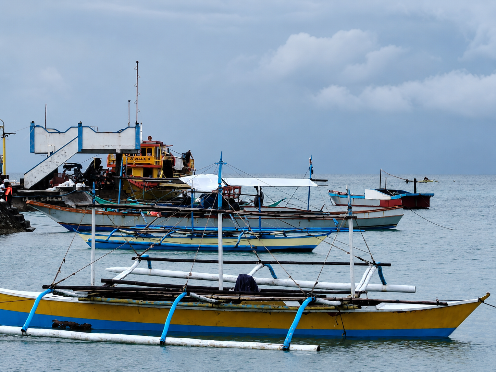
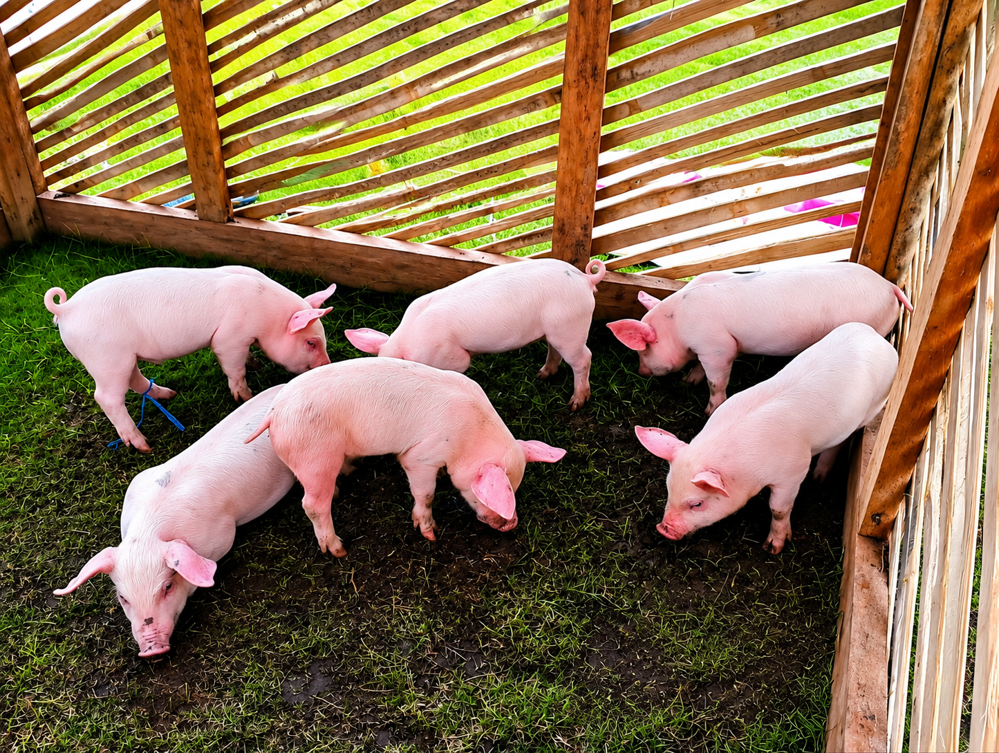
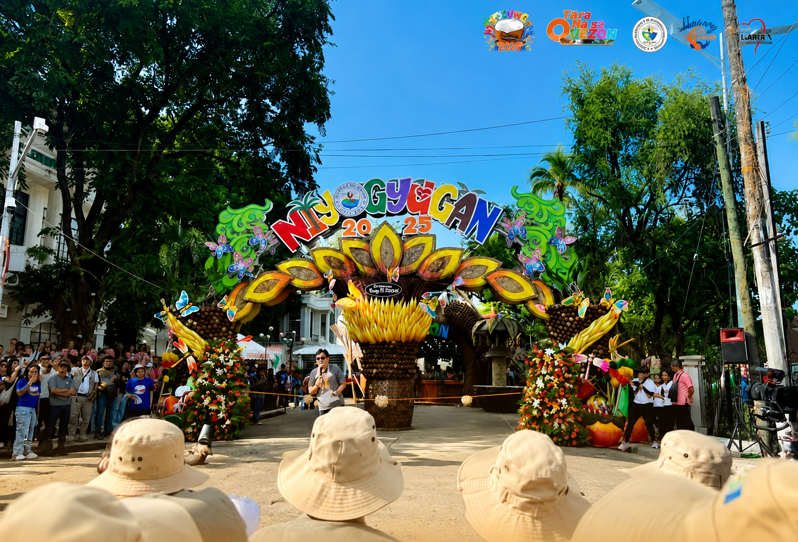
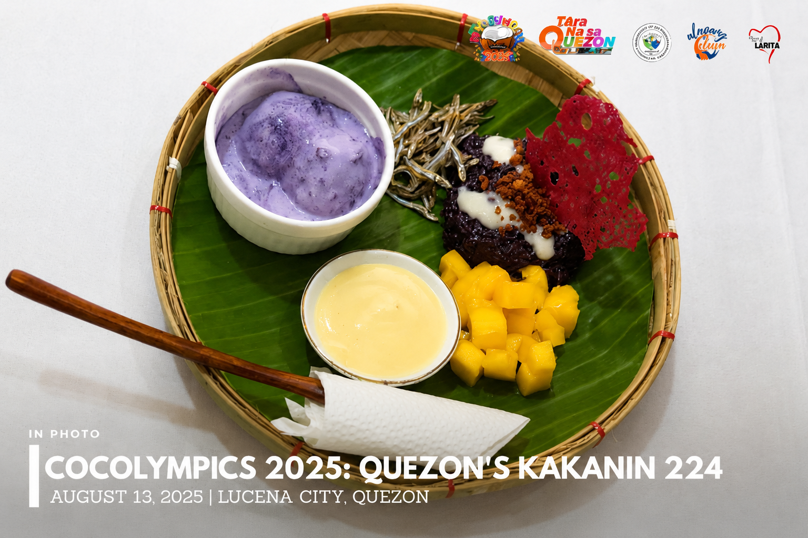
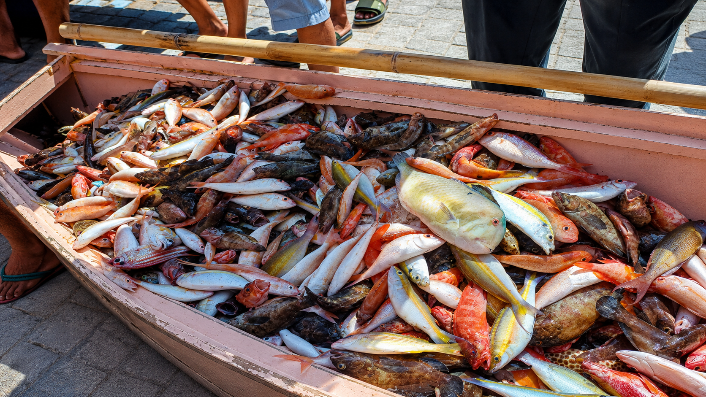
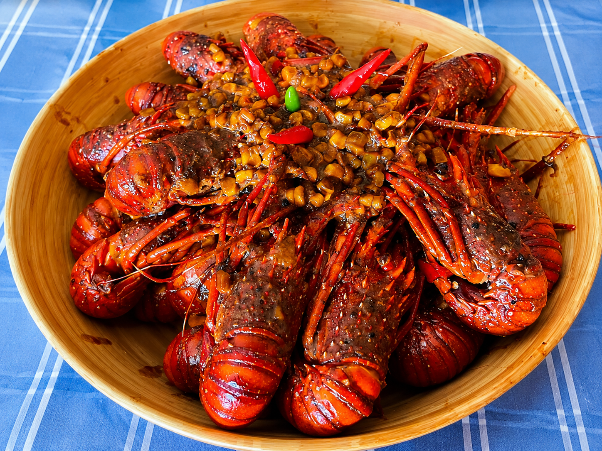
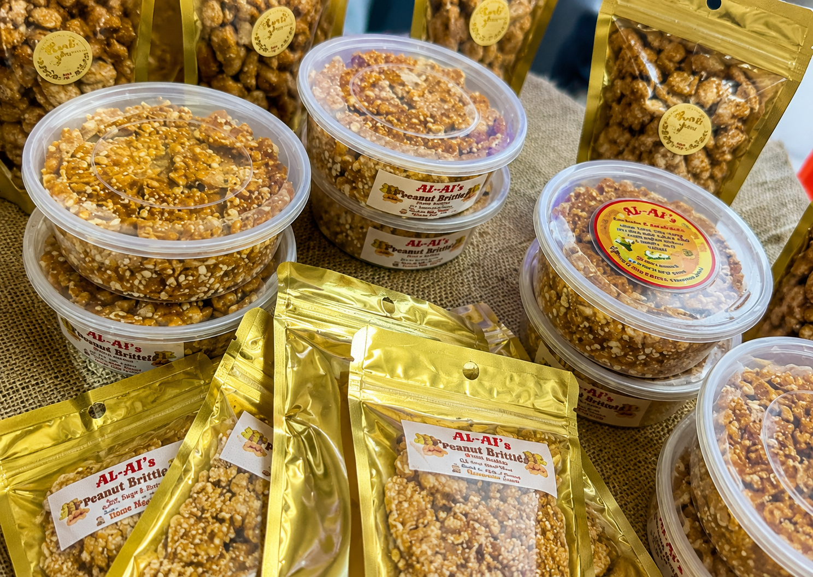
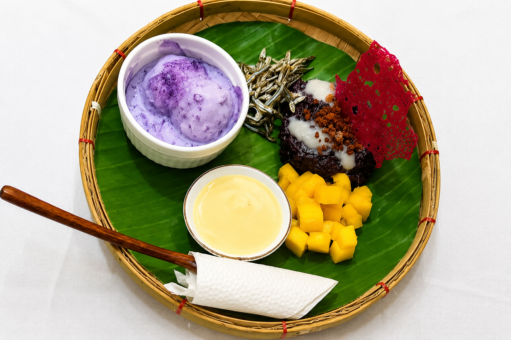

Where island traditions meet the freshest flavors of the sea — Patnanungan's culture is inseparable from its table.

Fishing in Patnanungan, Quezon is a long-standing tradition and primary livelihood of many families, where knowledge of the sea, fishing techniques, and boat handling are passed down through generations. It plays a vital role in sustaining the island’s economy and identity, with the community deeply connected to marine resources that provide their daily food and income.

Agriculture in Patnanungan, Quezon is centered on small-scale farming of root crops, vegetables, and coconut alongside livestock and swine production programs supported by the local government. It plays a vital role in strengthening food security and providing livelihood opportunities for farming communities on the island.

Community celebrations in Patnanungan, especially during events like the Niyogyugan Festival, reflect the strong unity and cultural pride of its people. These gatherings bring together different barangays to showcase local products, talents, and traditions while strengthening social bonds through food, music, and shared festivities that highlight island life.

Patnanungan’s handicrafts and local products highlight the creativity and resourcefulness of its people, featuring woven items, dried fish, and various coconut-based goods. The island is also known for its unique culinary creations such as kakanin and specialty dishes like ube mango sticky rice, which gained recognition during events like the Provincial Cocolympics, showcasing the rich food culture of the municipality.
The annual Patnanungan Festival and Agri-Fishery Fair is the island's biggest celebration — a vibrant showcase of everything the community produces, creates, and values. The fair features exhibits of local agricultural produce, fresh fish and seafood displays, and a marketplace where local handicrafts and food products are available.
Cultural performances during the festival highlight local dances, music, and theatrical productions rooted in the island's folk traditions. Fishing competitions and agricultural contests celebrate the skills and hard work that sustain the community's way of life.
The festival is also an occasion for the barangays of Patnanungan to come together in friendly competition — with each barangay presenting their best produce, fish haul, and cultural presentation before the community.
Travelers fortunate enough to visit during this period get an unfiltered view of Patnanungan's authentic island spirit — the pride in their land and sea, the warmth toward visitors, and the deep sense of community that makes this small island municipality special.
The kitchen in Patnanungan is defined by proximity: fish caught that morning, vegetables from backyard gardens, coconut from island palms.

Fresh seafood in Patnanungan Island is caught daily and served straight from the sea. Locals and visitors enjoy its natural taste that reflects the island’s rich marine waters.

Lobsters are a delicacy in Patnanungan, known for their sweet and succulent meat. They are often prepared grilled or in a rich seafood stew.

Peanut brittle in Patnanungan Island is a sweet local treat made from simple ingredients. It is a popular pasalubong that visitors love bringing home from the island.

Kakanin in Patnanungan Island represents traditional Filipino rice-based desserts made with care. It is commonly served during festivals and family gatherings as a cultural favorite.